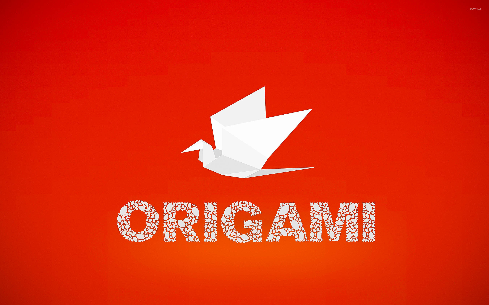
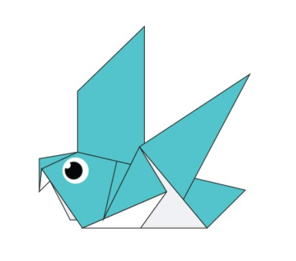
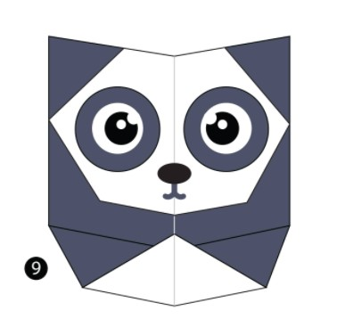
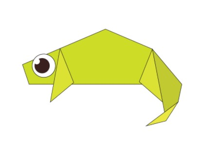
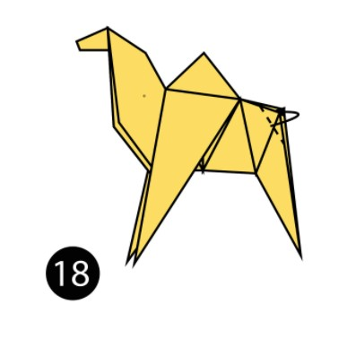

<!DOCTYPE html>
<html lang ="en"></html>
    <head>
        
<title>Origami Designs</title>
<link rel="stylesheet"
        type = "text/css"
        href="style.css"/>


<style>
    h1{
        color:blue;
        text-align: center;
    }
</style>

    </head>
    <body>
        <div class="header">
            <div class="menu">
                <div><a href ="#"></a></div>
                <div>Origami Designs</div>
                <div ><a href="about.html">About US</a></div>
            </div>
            <div class="bodyImg"></div>
            
            <p>
                Original Oragami Instructions and Diagrams
            </p>
            <h3><br>
                Attempting Origami's can be a hard task. However, a step by step diagram for each origami will help 
                you learn how to fold properly and make a unique design. Trying to find origami instructions online can be 
                a hard task, but I have provided you with links with clear instru tions and pictures that will surely help you 
                out. This is a protfollio that will help you make any animal origami of your wish. 

            </h3>
        </div>
        <div class ="grid">
            <div class = "origami">
                <center>
                    <a href = "https://www.origami.me/pigeon/"></a>
                    <h3>Pigeon</h3>
                </center>
                    <p>
                        <ol>
                            <li>Pigeons are incredibly complex and intelligent animals</li>
                            <li>Pigeons are known for their highly outstanding navigational abilities</li>
                            <li>Pigeons can raise two chicks at the same moment</li>  
                        </ol>
                    </p>
            </div>
            <div class = "origami">
                <center>
                    <a href = "https://www.origami.me/panda/"></a>
                    <h3>Panda</h3>
                </center>
                <p>
                    <ol>
                        <li>Pandas have a a technique to camoflauge in their enviornment</li>
                        <li>Their eyes are different than other mammels, such as bears</li>
                        <li>They favorite food is bamboo</li>
                    </ol>
                </p>
            </div>
                <div class = "origami">
                    <center>
                        <a href = "https://www.origami.me/chameleon/"></a>
                        <h3>chameleon</h3>
                    </center>
                    <p>
                        <ol>
                            <li>Most chameleons live in Madagascar</li>
                            <li>Sking cystals form on their body to change colors</li>
                            <li>Chameleons cannot regrow their tail</li>
                        </ol>
                    </p>
                </div>
                    <div class = "origami">
                        <center>
                            <a href = "https://www.origami.me/camel/"></a>
                            <h3>camel</h3>
                        </center>
                        <p>
                            <ol>
                                <li>Camels have three sets of eyelids and two rows of eyelashes</li>
                                <li>Camels don't store water in their humps</li>
                                <li>Their scientific name is Camelus</li>
                            </ol>
                        </p>
                    </div>
    

       